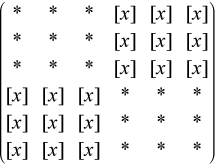

Intel® oneAPI Math Kernel Library Developer Reference - Fortran
Pre-processor for the routine ?gesvj, applies Jacobi rotations targeting only particular pivots.
call sgsvj1(jobv, m, n, n1, a, lda, d, sva, mv, v, ldv, eps, sfmin, tol, nsweep, work, lwork, info)
call dgsvj1(jobv, m, n, n1, a, lda, d, sva, mv, v, ldv, eps, sfmin, tol, nsweep, work, lwork, info)
call cgsvj1(jobv, m, n, n1, a, lda, d, sva, mv, v, ldv, eps, sfmin, tol, nsweep, work, lwork, info)
call zgsvj1(jobv, m, n, n1, a, lda, d, sva, mv, v, ldv, eps, sfmin, tol, nsweep, work, lwork, info)
This routine is called from ?gesvj as a pre-processor and that is its main purpose. It applies Jacobi rotations in the same way as ?gesvj does, but it targets only particular pivots and it does not check convergence (stopping criterion).
The routine ?gsvj1 applies few sweeps of Jacobi rotations in the column space of the input m-by-n matrix A. The pivot pairs are taken from the (1,2) off-diagonal block in the corresponding n-by-n Gram matrix A'*A. The block-entries (tiles) of the (1,2) off-diagonal block are marked by the [x]'s in the following scheme:

row-cycling in the nblr-by-nblc[x] blocks, row-cyclic pivoting inside each [x] block
In terms of the columns of the matrix A, the first n1 columns are rotated 'against' the remaining n-n1 columns, trying to increase the angle between the corresponding subspaces. The off-diagonal block is n1-by-(n-n1) and it is tiled using quadratic tiles. The number of sweeps is specified by nsweep, and the orthogonality threshold is set by tol.
CHARACTER*1. Must be 'V', 'A', or 'N'.
Specifies whether the output from this routine is used to compute the matrix V.
If jobv = 'V', the product of the Jacobi rotations is accumulated by post-multiplying the n-by-n array v.
If jobv = 'A', the product of the Jacobi rotations is accumulated by post-multiplying the mv-by-n array v.
If jobv = 'N', the Jacobi rotations are not accumulated.
INTEGER. The number of rows of the input matrix A (m≥ 0).
INTEGER. The number of columns of the input matrix B (m≥n≥ 0).
INTEGER. Specifies the 2-by-2 block partition. The first n1 columns are rotated 'against' the remaining n-n1 columns of the matrix A.
REAL for sgsvj1
DOUBLE PRECISION for dgsvj1.
COMPLEX for cgsvj1
DOUBLE COMPLEX for zgsvj1.
Array, DIMENSION (lda, n). Contains the m-by-n matrix A, such that A*diag(D) represents the input matrix.
INTEGER. The leading dimension of a; at least max(1, m).
REAL for sgsvj1
DOUBLE PRECISION for dgsvj1.
COMPLEX for cgsvj1
DOUBLE COMPLEX for zgsvj1.
Arrays, DIMENSION (n). Contains the diagonal matrix D that accumulates the scaling factors from the fast scaled Jacobi rotations. On entry A*diag(D) represents the input matrix.
REAL for sgsvj1
DOUBLE PRECISION for dgsvj1.
REAL for cgsvj1
DOUBLE PRECISION for zgsvj1.
Arrays, DIMENSION (n). Contains the Euclidean norms of the columns of the matrix A*diag(D).
INTEGER. The leading dimension of b; at least max(1, p).
If jobv = 'A', then mv rows of v are post-multiplied by a sequence of Jacobi rotations.
If jobv = 'N', then mv is not referenced .
REAL for sgsvj1
DOUBLE PRECISION for dgsvj1.
COMPLEX for cgsvj1
DOUBLE COMPLEX for zgsvj1.
Array, DIMENSION (ldv, n).
If jobv = 'V', then n rows of v are post-multiplied by a sequence of Jacobi rotations.
If jobv = 'A', then mv rows of v are post-multiplied by a sequence of Jacobi rotations.
If jobv = 'N', then v is not referenced.
INTEGER. The leading dimension of the array v; ldv≥ 1
ldv≥ n if jobv = 'V';
ldv≥ mv if jobv = 'A'.
REAL for sgsvj1
DOUBLE PRECISION for dgsvj1.
REAL for cgsvj1
DOUBLE PRECISION for zgsvj1.
The relative machine precision (epsilon) returned by the routine ?lamch.
REAL for sgsvj1
DOUBLE PRECISION for dgsvj1.
REAL for cgsvj1
DOUBLE PRECISION for zgsvj1.
Value of safe minimum returned by the routine ?lamch.
REAL for sgsvj1
DOUBLE PRECISION for dgsvj1.
REAL for cgsvj1
DOUBLE PRECISION for zgsvj1.
The threshold for Jacobi rotations. For a pair A(:,p), A(:,q) of pivot columns, the Jacobi rotation is applied only if abs(cos(angle(A(:,p),A(:,q))))> tol.
INTEGER.
The number of sweeps of Jacobi rotations to be performed.
REAL for sgsvj1
DOUBLE PRECISION for dgsvj1.
COMPLEX for cgsvj1
DOUBLE COMPLEX for zgsvj1.
Workspace array, DIMENSION (lwork).
INTEGER. The size of the array work; at least max(1, m).
On exit, A*diag(D) represents the input matrix post-multiplied by a sequence of Jacobi rotations, where the rotation threshold and the total number of sweeps are given in tol and nsweep, respectively
On exit, A*diag(D) represents the input matrix post-multiplied by a sequence of Jacobi rotations, where the rotation threshold and the total number of sweeps are given in tol and nsweep, respectively.
On exit, contains the Euclidean norms of the columns of the output matrix A*diag(D).
If jobv = 'V', then n rows of v are post-multiplied by a sequence of Jacobi rotations.
If jobv = 'A', then mv rows of v are post-multiplied by a sequence of Jacobi rotations.
If jobv = 'N', then v is not referenced.
INTEGER.
If info = 0, the execution is successful.
If info = -i, the i-th parameter had an illegal value.